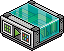
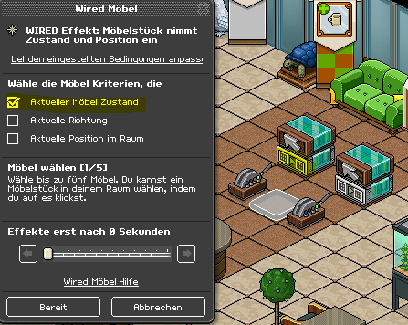
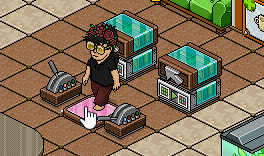

Wired Handbuch für Anfänger
Nr. 7: Position und Zustand
Inhalt:
1. Einführung
2. Möbelzustand
3. Richtung
4. Position im Raum
1. Einführung
“Möbelstück nimmt Zustand und Position ein” ist ein langer Name, weshalb es gerne mit “Posi-Wired” abgekürzt wird. Das werden wir auch hier tun. Dieses Wired ist ein sehr wichtiges Wired, da es sehr oft verwendet wird und man mit diesem Wired vieles anstellen kann. Das Wired beinhaltet drei wirklich gute Effekte. Diese drei Effekte werden hier einzeln aufgezeigt.
2. Möbelzustand
Der 1. Effekt ähnelt dem Effekt von “Möbelzustände umschalten”. Hier wird aber kein Möbelzustand “umgeschaltet” sondern ein Möbelzustand den man im Wired gespeichert hat wird eingenommen. Selbst dann, wenn der Zustand schon vorhanden ist. So kann man einen bestimmten Zustand von Möbel erreichen unabhängig vom aktuellen Zustand. Folgende Einstellung zeigt wie das aussehen kann.
Ziel: Mit einem Bodenschalter soll eine Farbfliese auf rot geändert werden. Mit einem 2. Schalter auf grün.
Stapel A:
Posi-Wired; fixiert auf roter Farbfliese
+ Möbel wird verwendet; fixiert auf 1. Schalter
Stapel B:
Posi-Wired; fixiert auf grüner Farbfliese
+ Möbel wird verwendet; fixiert auf 2. Schalter
Inhalt:
1. Einführung
2. Möbelzustand
3. Richtung
4. Position im Raum
1. Einführung
“Möbelstück nimmt Zustand und Position ein” ist ein langer Name, weshalb es gerne mit “Posi-Wired” abgekürzt wird. Das werden wir auch hier tun. Dieses Wired ist ein sehr wichtiges Wired, da es sehr oft verwendet wird und man mit diesem Wired vieles anstellen kann. Das Wired beinhaltet drei wirklich gute Effekte. Diese drei Effekte werden hier einzeln aufgezeigt.
2. Möbelzustand
Der 1. Effekt ähnelt dem Effekt von “Möbelzustände umschalten”. Hier wird aber kein Möbelzustand “umgeschaltet” sondern ein Möbelzustand den man im Wired gespeichert hat wird eingenommen. Selbst dann, wenn der Zustand schon vorhanden ist. So kann man einen bestimmten Zustand von Möbel erreichen unabhängig vom aktuellen Zustand. Folgende Einstellung zeigt wie das aussehen kann.
Ziel: Mit einem Bodenschalter soll eine Farbfliese auf rot geändert werden. Mit einem 2. Schalter auf grün.
Stapel A:
Posi-Wired; fixiert auf roter Farbfliese
+ Möbel wird verwendet; fixiert auf 1. Schalter
Stapel B:
Posi-Wired; fixiert auf grüner Farbfliese
+ Möbel wird verwendet; fixiert auf 2. Schalter

WIRED Effekt: Möbelstück nimmt Zustand und Position ein

WIRED Auslöser: Möbel wird verwendet
Verwendung (Posi-Wired): Bei “Aktueller Möbel Zustand” ist links ein Kästchen wo ein haken gesetzt werden kann. Ist der haken gesetzt wird dieser Effekt angewendet. Das Möbelstück muss jetzt in dem Zustand sein den man später beim auslösen des Effekts haben möchte. Heißt: die Farbfliese muss für Stapel A rot sein und dann wählt man die Fliese aus. Jetzt kann man auf bereit klicken, um diesen Zustand zu speichern.

Die Farbfliese ist aktuell auf rot
Wird der Bodenschalter für Stapel A betätigt “springt” die Farbfliese auf rot um. Das gleiche macht man für Stapel B mit der grünen Farbe. Jetzt kann man mit beiden Schaltern zwischen rot und grün wechseln, ohne durch die anderen Zustände umschalten zu müssen. Wird derselbe Schalter mehrmals hintereinander betätigt ändert sich nichts, weil der aktuelle Zustand schon gegeben ist.

Der vorherige Zustand wird nicht berücksichtigt
Anwendung: Dieser Effekt wird z. B. auch oft bei Schaltern verwendet, wo man User zu verschiedenen Orten im Raum teleportieren kann (siehe Nr. 3: Reset und Bedingung>Zusatzinfo). Dabei werden Zugangssperren auf geöffnete Zustände im Posi-Wired gespeichert. Gleichzeitig dreht sich ein Roller zur passenden Zugangssperre. Dafür benötigt man den nächsten Effekt der erklärt wird: aktuelle Richtung.
3. Richtung
Dieser Effekt ähnelt dem Dreh-Effekt von “Möbel bewegen und drehen”. Aber auch hier “springt” vielmehr das ausgewählte Möbelstück zu einer gespeicherten Richtung und ist wieder unabhängig von der vorherigen Richtung des Möbels. Das erweiterte Schaltersystem von oben wird als Beispiel verwendet.
Ziel: Beim betätigen eines Schalters soll sich eine Zugangssperre öffnen und der Roller in der Mitte soll sich zur geöffneten Sperre drehen. Beim betreten soll man zur zugehörigen Farbfliese teleportiert werden und die Sperren wieder geschlossen werden.
Verwendung: Im 1. Wired-Block wählt man für die Auslöser "Möbel wird verwendet" jeweils einen Bodenschalter aus. Im Posi-Wired Speichert man den geöffneten Zustand von der Sperre und wählt gleichzeitig den Roller aus, der zur geöffneter Sperre gedreht sein muss. Die ersten beiden Kästchen müssen im Wired angeklickt werden.
Für die anderen zwei Richtungen wird das gleiche eingestellt bei mittlerer und linker Sperre.
Im 2. Block wird eingestellt, dass wenn ein User auf einer der drei Sperren tritt die Sperren sofort geschlossen werden. Für das Wired Möbelzustände umschalten war dies mit dem Auslöser Tritt-auf nicht möglich. Aber mit dem Posi-Wired werden die Sperren trotzdem geschlossen auch, wenn sich ein User noch auf der Sperre befindet.
Und im 3. Block wird eingestellt, dass der User zur richtigen Farbfliese teleportiert wird, wenn er auf einer Sperre tritt.
Anwendung: Jetzt hat man grob ein Schaltersystem mit dem man entscheiden kann wohin jemand im Raum teleportiert werden soll. Diese Schaltersysteme sieht man bei vielen Job Centern.
4. Position im Raum
Jetzt kommen wir zum 3. Effekt des Wireds, der dem bewegen-Effekt von “Möbel bewegen und drehen” etwas ähnelt. Jedoch bewegt sich das ausgewählte Möbelstück nicht wirklich sondern nimmt eine Position im Raum ein. Somit kann auch kein Hindernis für den Möbel entstehen, da er mehr “teleportiert” wird. Es kann höchstens blockiert werden, falls bestimmte Möbel an der Stelle stehen, wo eigentlich das Möbelstück positioniert werden soll.
Ziel: Mit einem Code-Wort soll ein Bodenschalter erscheinen. Sobald man diesen betätigt soll er wieder verschwinden und der User selbst wird teleportiert.
Stapel A:
Posi-Wired; fixiert Bodenschalter auf Tisch
+ Sagt etwas; Wort: "fertig"
Stapel B:
Posi-Wired; fixiert Bodenschalter an einer unerreichbaren Stelle.
+ Teleport-Wired; fixiert Ringplatte
+ Möbel wird verwendet; fixiert auf Bodenschalter
Das "Sagt etwas" Wired wurde bisher noch nicht erklärt und taucht erst bei Lektion Nr. 10 auf, es wird hier nur kurz erklärt.

WIRED Auslöser: Ein Habbo sagt etwas
Verwendung: Das Posi-Wired in Stapel A muss den Bodenschalter auf den Tisch gespeichert haben. Der letzte Effekt wird im Einstellungsfenster ausgewählt. Im Sagt-etwas Wired schreibt man das Wort "Fertig" hinein.
In Stapel B wird der Bodenschalter ausgewählt für den Auslöser: Möbel wird verwendet. Im Teleport Wired wird eine Ringplatte ausgewählt und im Posi-Wired wird wieder der letzte Effekt angeklickt, dabei muss der Bodenschalter hinter einem abgegrenzten Bereich sein.
Am ende sieht das ganze so aus:
Anwendung: In manchen Events wird so etwas ähnliches eingestellt. Hat man eine Aufgabe erfüllt soll man z. B. "fertig" oder etwas ähnliches sagen damit ein Schalter kommt oder ein Teleporter etc. den man dann verwenden soll. Dann wird man weiter gebracht.
Zusammenfassung, was ist wichtig?
- "Möbelstück nimmt Zustand und Position ein" wird oft mit der Bezeichnung "Posi" abgekürzt
- Das Posi-Wired besitzt 3 Effekte, die voneinander unabhängig funktionieren
- Der 1. Effekt nimmt einen gespeicherten Zustand ein, egal welcher Zustand das Möbelstück vorher hatte
- Der 2. Effekt wird auf eine gespeicherte Richtung gedreht, egal auf welche Richtung das Möbelstück vorher gedreht war
- Der 3. Effekt positioniert einen Möbelstück im Raum, egal wo er vorher gestanden hat
- Der Zustand, die Richtung oder die Position wird direkt eingenommen, es wird sozusagen zum Ergebnis "gesprungen"
- Speichern kann man einen Zustand, Richtung oder Position von einem Möbelstück, indem dieser ausgewählt wird und in diesem Zustand, Richtung oder Position gebracht wird wie er dann beim Auslösen sein soll, dann muss der richtige haken gesetzt werden